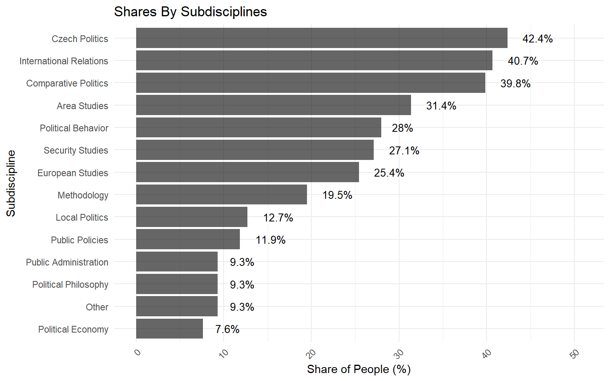
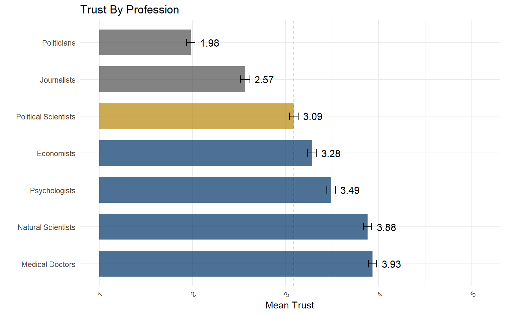
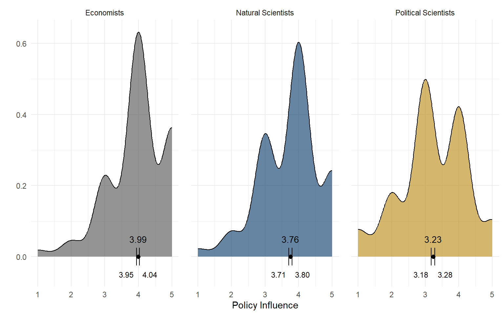
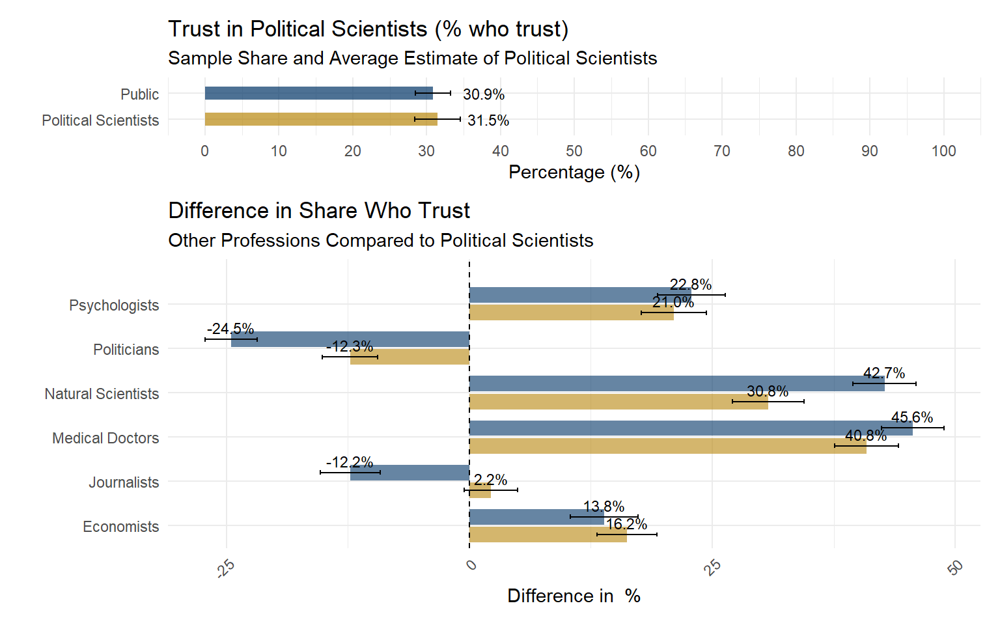
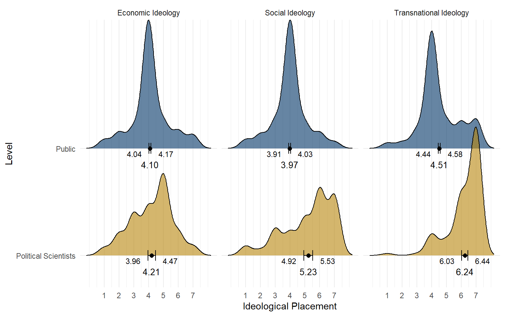
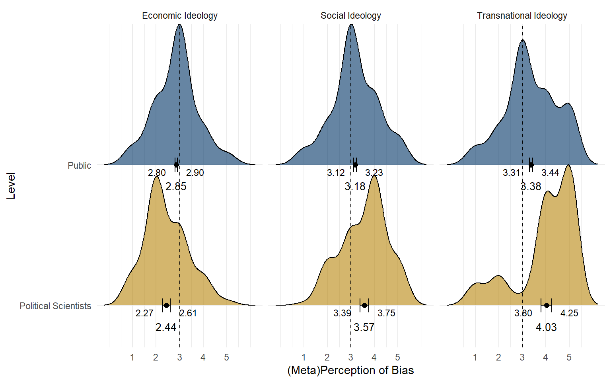
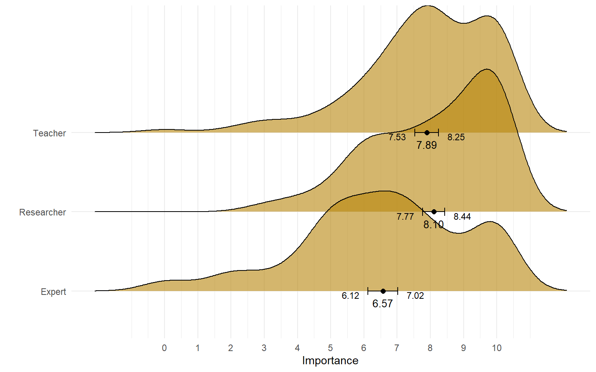
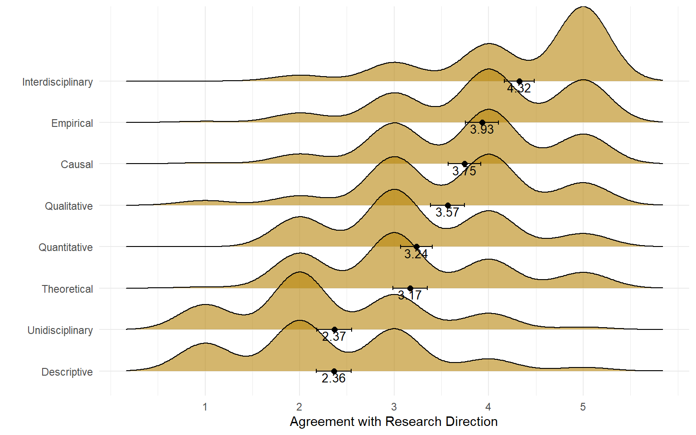
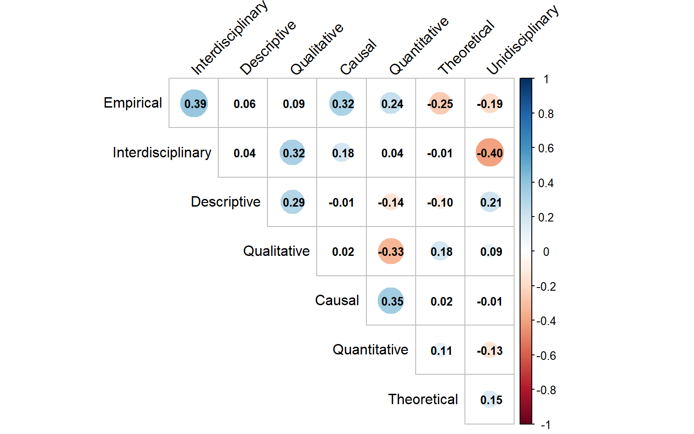

Welcome to the study of Czech Political Scientists, an assessment of the state of the discipline that provides a unique snapshot of perceptions and practices in the Central and Eastern European context. Relying on both mass surveys and surveys of Czech political scientists, we provide descriptions related to trust in them, bias, research practices, and communication. This is part of a small research project conducted with Andrew L. Roberts and supported by the Czech Political Science Association and Northwestern University. A research article using these data is currently under preparation. Upon its acceptance, we will make all data and materials publicly available for use!
Here are some of the things we found:
Trust ranking: Political scientists beat politicians and journalists—but trail far behind natural scientists, psychologists, and economists.
Perception gap: Political scientists nail their own trust score (~30% people who trust them) but underestimate how much higher it is than politicians’ and how much lower it is than natural scientists’.
Ideological tilt: Slightly more liberal on social issues and more pro-Western internationally, with no big gap on economics.
Blind spots: Public sees little bias—except slightly pro-Western—while political scientists think their field is more skewed.
Role balance: Teaching and research are neck-and-neck; the “expert” role lags behind. Teachers are more likely than researchers to emphasize the expert role.
Methods future: Empirical, causal, and interdisciplinary win; purely descriptive or siloed approaches flop. Two clusters emerge in methods emphasized: one linking interdisciplinarity with qualitative and descriptive methods, the other combining empirical, causal, and quantitative approaches.
Publishing reality: Most plan to publish in English, often with foreign publishers, and overwhelmingly focus on journal articles rather than books. Collaborations are common but typically stay within the same institution.
Outreach habits: Newspapers and departmental websites dominate; social media (but Facebook) and podcasts underused.
Questionable practices watchlist: Top concerns related to inadequate work performance in reporting and review, but honorary authorships, HARKing, shady ways to promote citation of one’s work.
We hope you find this useful.
TadeasIn June 2025, we sampled both 118 political scientists (response rate = 44 %) and 1518 members of the public (representative using quotas on age, region, settlement size and education). For political scientists, we scraped e-mail addresses from departments at Czech universities that explicitly refer to political science and its subdisciplines (e.g., international relations). In addition to six public universities (UK, MU, UPOL, UHK, ZČU, UJEP), we also included three private universities (CEVRO, AMBIS, MUP) and the political science section of the Institute of Sociology at the Czech Academy of Sciences. We included all academic employees, including PhD students. In total, we were able to reach 286 political scientists.
This is not the entire population of political scientists in the Czech Republic. Some work in departments with broader focuses (e.g., regional development) or in departments devoted to other social sciences (e.g., psychology). Due to the practical difficulties of identifying such individuals scattered across institutions, we limited our scope to the political science departments mentioned above.
The mass sample was collected by the TalkOnline agency between June 30 and July 14. The survey included a simple attention check, which was failed by only 3.7% of respondents. All responses were fully anonymized and otherwise protected. We will make the full dataset, sample description, and complete survey instrument available after the resulting manuscript is published.
Men dominate our sample, but this reflects the unequal composition of faculty members rather than a sampling bias. The sample also includes researchers at all career stages, with PhD students representing about a third, while docents and professors make up more than 20%. In the residual category, “other,” we mainly find senior scientists who focus primarily (or exclusively) on research and hold positions more senior than postdocs. Among those who have already been awarded a PhD, the average time since graduation is 12.4 years (SD = 7.9 years, 95% CI = 10.5–14.2 years).
| Category | Count | Share |
|---|---|---|
| Man | 85 | 74.6% |
| Woman | 29 | 25.4% |
| Postdoc / Assistant Professor | 52 | 44.1% |
| PhD Student | 36 | 30.5% |
| Associate Professor (Docent) | 15 | 12.7% |
| Professor | 10 | 8.5% |
| Other (Senior Scientist, etc.) | 5 | 4.2% |
In our survey, we asked respondents to identify themselves with a preselected pool of 14 subdisciplines that represent the diversity of approaches in political science. Each respondent could select multiple subfields simultaneously. We also offered a write-in option, “other,” which was mainly used to provide more specific definitions (e.g., “electoral behavior,” “regional politics,” “populism”) or methodological and other distinctions (e.g., “interpretative political science”).
Among the 14 fields, most respondents identified with Czech Politics, Comparative Politics, or International Relations—common distinctions not unique to the Czech context. A large share also selected Area Studies, Political Behavior, Security Studies, or European Studies. At the lower end of the distribution, we find Political Economy, Political Philosophy, and Public Administration.

Our main aim was to describe and explain trust in political scientists; therefore, we employed multiple approaches to measuring trust. Here, we present a straightforward question about how much respondents trust political scientists. To provide reasonable benchmarks, we also asked about trust in several other professions, including politicians, journalists, as well as various types of scientists—from social scientists to natural scientists (considered simply as another category) and medical doctors. Our findings, in the new Czech context, reaffirm prior research showing that political science tends to be among the least trusted scientific fields, see Gligorić, Kleef, and Rutjens (2024) . Nevertheless, the public still trusts them substantially more than some of the subjects of their research—politicians and journalists.
Influence on PolicyInfluencing policy is an important aspect of most scientists’ work, even in the eyes of the public, although probably not as important as communicating results directly to it, see Cologna et al. (2025) . We therefore asked respondents to indicate their agreement with the statement that political scientists should have influence on public policy. As shown below, the average response is significantly above the ‘neither agree nor disagree’ midpoint of the scale. This, however, could simply reflect a general call for more expert influence on policy. Our other categories suggest that this is indeed the case: both economists and natural scientists are viewed by the public as more suitable for shaping policy. This is especially true for economists, where few respondents express disagreement. Overall, these findings indicate that the discipline of political science needs to make greater efforts to convince the public of its role in policymaking, as current support for its involvement remains relatively low.
Metaperceptions of TrustWe have shown that there is relatively little trust in political scientists. Whether political scientists themselves believe that the public sees them this way remains an open question. We took advantage of the survey among political scientists to ask them what percentage of the mass population they think rather trusts or trusts them. We then compared their estimates to the actual shares in our sample (with confidence intervals providing information on likely population proportions). As depicted below, political scientists have a fairly accurate picture of the share of the population that trusts them—about 30%. We also examined how they perceive trust in political science compared to other professions mentioned earlier. We show how the shares of people who trust six other professions differ from those who trust political scientists, alongside political scientists’ estimates using the same differences. We find that political scientists underestimate how much more people in the Czech Republic trust natural sciences (over 73% of the sample, while the average estimate was over 62%). On the other hand, they conflate the difference between political scientists and the subjects of their study: only over 6% of respondents claimed that they trust politicians (while political scientists estimated over 19% on average) and over 18% in the case of journalists (political scientists estimated over 33% on average).



While Czech political scientists do not diverge significantly from the mass population on the economic dimension (examples include welfare spending and government intervention in the economy), there is a significant bias on the social dimension (which includes issues such as LGBTQ+ rights and minorities) and on the transnational dimension (covering topics like European integration and policies toward Russia). On these latter two dimensions, political scientists tend to be more liberal and Western-oriented, whereas the population average hovers around the midpoint on the social dimension and is only moderately pro-Western.
Perceptions of BiasBesides the bias itself, there is the question of awareness of this bias. As stated earlier, not many people in Czechia are exposed to political scientists. Additionally, possibly locked in an echo chamber, political scientists themselves might not perceive their own biases. Therefore, we incorporate perceptions of bias from both the public and political scientists in our surveys.
The public is not very aware of ideological bias among political scientists. On average, they position political scientists close to the midpoint, which was labeled as views similar to those of average citizens. Although some respondents perceive bias, they disagree on its direction. The only exception is the transnational dimension, which corresponds well with the actual ideological bias identified in our samples (political scientists being more pro-Western). In contrast, bias on the social dimension largely remains unnoticed. Political scientists generally tend to perceive more bias. While the transnational dimension is again the most prominent, they also perceive bias on the social dimension (with political scientists being more liberal, consistent with our previous analysis) and on the economic dimension (with political scientists being more right-wing, which we did not find). This perception is somewhat disjointed from their own ideological placements and may reflect a misperception of how biased the field actually is on economic issues.
MeasurementFor this analysis, we asked respondents and political scientists to place themselves on three ideological dimensions (ideological bias) and to indicate whether they perceive that the attitudes of Czech political scientists differ from those of an average Czech citizen, and if so, in which direction. The response options for the three dimensions (perceptions of bias) were right-wing/left-wing, conservative/liberal, and anti-Western/pro-Western.


Universities, home to most political scientists—and all political scientists in our sample—are involved in several activities, from education through research to community engagement, offering academics multiple roles to engage in. In our survey of political scientists, we also asked about the importance of these three roles (researcher, teacher, expert) in our respondents’ professional lives, with responses measured on an eleven-point scale.
The roles of teacher and researcher are, on average, equally important, whereas the role of expert is significantly less emphasized. These aggregated differences, however, do not reveal how these roles tend to coexist. For that reason, we also examine their correlations. Overall, there are rather weak associations between emphasizing the three roles. There is, however, a modest positive association between emphasizing the roles of teacher and expert (correlation of 0.35), suggesting that those who prioritize their teaching roles also tend to feature more as experts. The roles of researcher and teacher are more weakly correlated (correlation of 0.16), while the roles of researcher and expert are the least connected and essentially independent of each other (correlation of 0.05).

We also asked political scientists about the methodological directions of future research. Using questions adapted from Grossmann (2021), who emphasizes changes in social science driven by the credibility revolution and a greater focus on quantitative and causal research, we offered eight such options to Czech political scientists and asked them to indicate their agreement with each as a viable new direction for Czech political science research. We added options emphasizing more qualitative and theoretical work, even if they were not included by Grossman. Specifically, we asked respondents in which direction Czech political science should develop in the future, providing eight options and asking them to express their agreement or disagreement on five-point scales.
There is strong support for methods that are interdisciplinary, empirical, and causal. At the other end of the spectrum, there is noticeable disfavor toward unidisciplinary (strictly political science) and solely descriptive approaches. Overall, this picture is consistent with the aforementioned study. On the other hand, purely quantitative studies do not receive substantially more support for the future. Qualitative studies are considered just as important—the average support is even slightly higher, although the difference is not statistically significant.
Beyond average support, we also examined how emphasis on different methodological futures correlates across these items. As expected, there are several, albeit moderate, negative correlations—for example, proponents of interdisciplinary approaches tend to disagree with unidisciplinary approaches, and so on. However, there is no contradiction between desiring more descriptive and causal methods. Regarding positive associations, we observe that one cluster links interdisciplinarity with a greater emphasis on qualitative and descriptive approaches. Conversely, another cluster includes a preference for methods that are empirical, causal, quantitative, and also somewhat interdisciplinary. This may indicate the emergence of two different methodological clusters (quantitative and qualitative), although the associations are modest and there is no negative correlation between the two, suggesting these represent differences in emphasis rather than strongly contradictory approaches.


Publication Types Czech political science (referring to researchers at Czech universities) appears to have accessed the global political science community but has yet to reach the top ranks in publications, recognition, or funding. In many respects, it remains on the periphery of political science research production, often emphasizing low-risk, low-pressure publications—a consequence of its disadvantaged position due to financial constraints and the hierarchical nature of research production in Europe Eberle et al. (2021) . This situation calls for a deeper examination of research production practices in the Czech Republic. Here, we provide some initial facts to that effect.
As part of our survey, we asked Czech political scientists which publications they plan to prepare in the current or upcoming calendar year. We focus on specific types of publications (books, articles), language, and co-authorship patterns. Beyond publishing, we also investigate how frequently Czech political scientists use various platforms—from traditional media to new media—to communicate their research to broader popular audiences.
Overall, in its norms and practices, Czech political science does not seem to diverge from the mainstream in its focus on articles, predominantly published in English and by foreign publishers. What is missing in our survey are details on specific publication strategies, methodological rigor and academic aptitudes (including, but not limited to, academic language proficiency, clear organization of texts, or dealing with peer review). These challenges, rather than differing publishing norms and practices, might lie at the root of the problem.
Working on Articles
97.5
Working on Book Chapters
37.3
Working on Books
19.5
When we look at the types of books Czech political scientists are writing, we focus on their publishers and audiences.
Working on Books: Foreign Publisher
11.9
Working on Books: Czech Publisher
7.6
Working on Books: Academic
17.8
Working on Books: Popular
1.7
Here, we consider the predominant language of publications, either English or Czech/Slovak (many faculty members at Czech universities are Slovak, whose native language is very similar to Czech). In addition to these two languages, two researchers indicated also writing at least one publication in Spanish, and three researchers also reported at least one publication in French. No one is writing solely in Czech/Slovak.
Only in English
66.9
Predominantly in English
27.1
Predominantly in Czech/Slovak
5.1
We also asked about the main affiliation of co-authors, distinguishing between Czech and foreign universities. These questions were only posed to respondents who indicated they are preparing an article with co-authors, comprising 57.6% of our sample. Almost three fifths of that research is conducted solely with Czech co-authors, in the overwhelming majority of cases from the same institution. However, there are numerous instances of Czech political scientists collaborating with researchers from foreign institutions. Among research projects that include at least one foreign co-author, there is not a single case where the majority of co-authors are foreign. Overall, research production appears to be internationalized, with Czech researchers notably absent from teams where the majority of co-authors are foreign.
All Czechs, Most Co-Authors from Same Institution
45.4
All Czechs, Most Co-Authors from Different Institution
10.2
At Least One Foreign Co-Author
42.3
Lastly, we also investigate how Czech political scientists communicate their findings to the general public. We offered a wide range of options based on our experiences and those of our colleagues. These include traditional media such as print media, radio, and television, as well as new media, including social media and podcasts. Our findings suggest a persistent reliance on traditional channels—departmental websites and newspapers are the two most popular ways Czech political scientists communicate with the public. In contrast, writing personal blogs or maintaining a presence on primarily visual or newer social media platforms is relatively rare.
Newspapers
33.1
Departmental Website
33.1
Radio
22.9
Television
21.2
Blog
4.2
27.1
Twitter/X
22.9
Podcast
13.6
BlueSky/Mastodon
6.8
Instagram, TikTok
6.8
We asked political scientists how prevalent they believe the following questionable research practices are within the Czech political science community. Here, we report the percentages of respondents who indicated that the practice occurs often or very often (from five response options: never, rarely, sometimes, often, very often).
Due to concerns about respondent fatigue, each respondent evaluated ten randomly selected practices (half of the full set). They were also given a “don’t know” option, resulting in an average of 28.5 responses per practice. Specific practices were selected based on Schneider et al. (2024).
Plagiarizing Unpublished Ideas
6
Undisclosed Conflicts of Interest
13
Deliberate Omission of Contradictory Studies
18
Biased Peer Review
21
Unqualified Peer Review Acceptance
23
Data/Methodology Non-Disclosure
24
Undisclosed Data Recycling
25
Misinterpreting Non-Significant Results
29
P-Hacking
32
Overstating Results
33
Post Hoc Justification of Findings (Qualitative)
36
False Qualitative Claims
37
Superficial Peer Review
42
Redundant Publication
47
Ignoring Practical Significance
47
Honorary Authorship
53
Hypothesis Manipulation Post Hoc (Quantitative)
54
Excessive Self-Citation
56
Selective Citation to Appease Reviewers
60
Citation without Reading
77